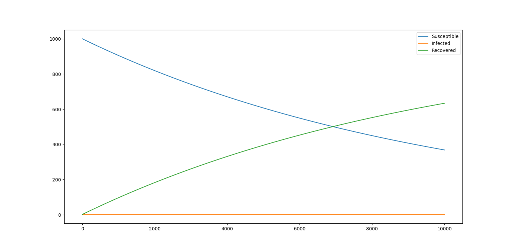
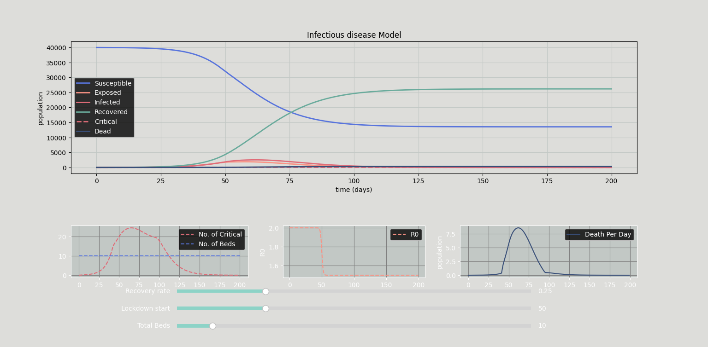
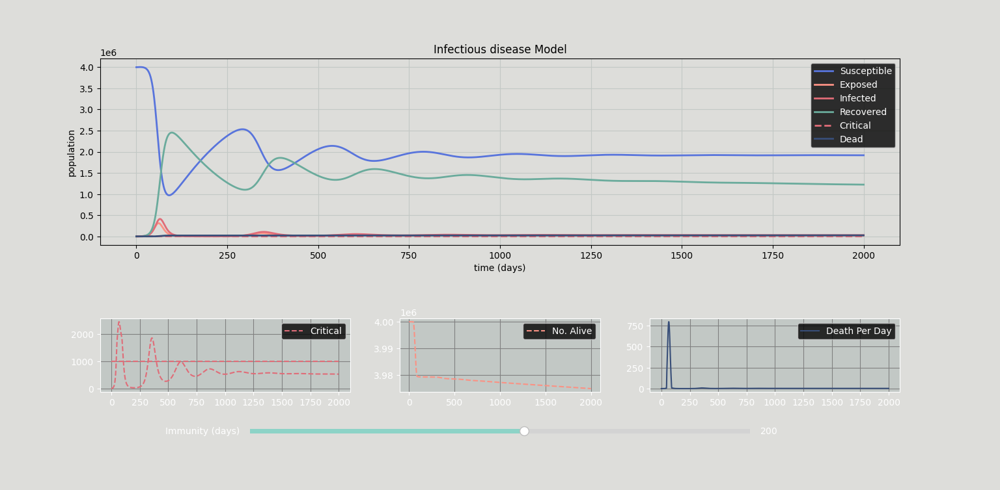

Infectious Disease Modeling
Welcome to this repository. This project explores the dynamics of disease transmission through computational simulation. By using Compartmental Models, we can mathematically estimate how an epidemic evolves over time, allowing us to visualize the impact of variables such as transmission rates, recovery times, and government interventions like lockdowns.
The project is implemented entirely in Python, utilizing SciPy for solving differential equations and Matplotlib for interactive visualizations.
Theoretical Background
What is Compartmental Modeling?
Compartmental modeling simplifies the mathematical modeling of infectious diseases by assigning the population to labeled "compartments." For example:
- S (Susceptible): Individuals who can catch the disease.
- I (Infected): Individuals who have the disease and can transmit it.
- R (Recovered): Individuals who have recovered and are immune (or removed).
People progress between these compartments (flow patterns). The mathematics assumes the population is well-mixed, meaning every individual has an equal chance of coming into contact with every other individual.
History
The foundations of this field were laid in the early 20th century. While Ross (1916) and Hudson (1917) did foundational work on probability in pathometry, the definitive formulation of the deterministic compartmental model was established by W. O. Kermack and A. G. McKendrick in 1927. Their work remains the basis for most modern epidemiological models used by the CDC and WHO today.
The Mathematics (ODEs)
The models are driven by systems of Ordinary Differential Equations (ODEs). The fundamental transition from Susceptible to Infected is driven by the transmission rate $\beta$ (beta).
A standard SIR system is described as:
$$ \frac{dS}{dt} = - \frac{\beta S I}{N} $$ $$ \frac{dI}{dt} = \frac{\beta S I}{N} - \gamma I $$ $$ \frac{dR}{dt} = \gamma I $$
Where $N$ is total population and $\gamma$ is the recovery rate.
The Models
1. The SIR Model
The simplest model considering a fixed population with three compartments. It assumes immunity is permanent and there are no vital dynamics (births/deaths) during the outbreak.


2. The SEIRD Model (Interactive)
This model adds significant complexity for more realistic simulations, specifically for diseases like COVID-19.
- Exposed (E): Accounts for the incubation period where patients are infected but not yet infectious.
- Critical (C) & Dead (D): Tracks severe cases.
- Hospital Capacity: The model introduces a parameter for `Beds`. If Critical cases > Beds, the death rate increases.

3. The SEIRSD Model (Waning Immunity)
Unlike the previous models, the SEIRSD model assumes immunity is temporary. Individuals in the Recovered compartment eventually lose immunity and return to the Susceptible compartment.
$$ \frac{dS}{dt} = -\beta \frac{SI}{N} + \mu R $$
Where $\mu$ represents the rate of immunity loss. This creates an endemic state where the disease never fully disappears but oscillates over time.

Conclusion & Future Work
These models provide a robust framework for understanding epidemic curves. The inclusion of interactive elements, such as lockdown timing sliders and healthcare capacity limits, allows for "What-If" analysis that is crucial for policy making.
Future Improvements
- Stochastic Implementation: Moving from deterministic ODEs to Gillespie algorithms to better simulate small populations where chance plays a larger role.
- Spatial Dynamics: Implementing a network-based approach to simulate spread between different cities or regions.
- Real-Data Fitting: Integrating algorithms to fit the model parameters ($\beta$ and $\gamma$) to real-world CSV data from ongoing epidemics.